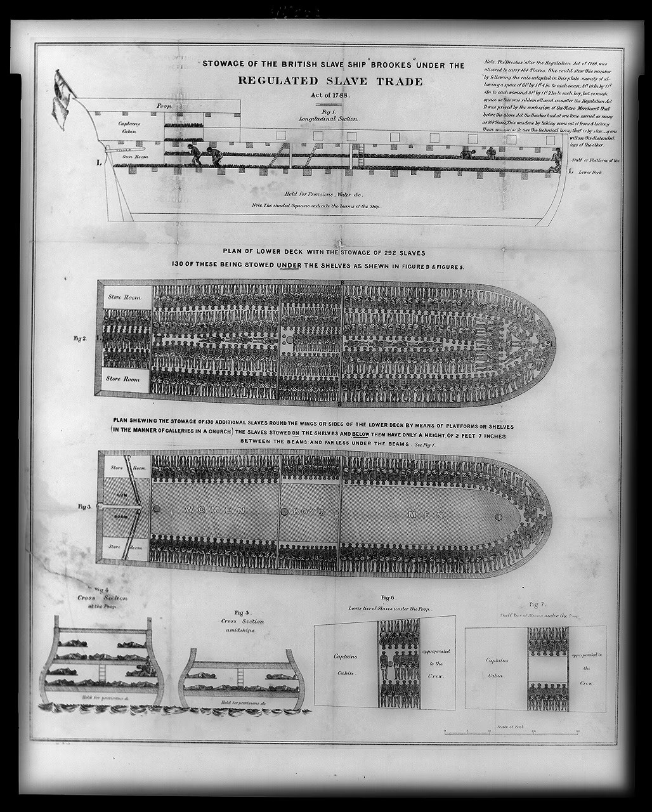

02 Sweet and Speed
1788년, 법을 지킨 도면
UNDER THE REGULATED SLAVE TRADE ACT of 1788
"노예를 너무 빽빽하게 싣지 말라"는 법이 통과된 후,
"
이 정도면 법을 지킨 것
"이라며 제출된 도면
기준이 생기면, 기준에 맞춘 그림이 먼저 생긴다. 그림이 보여주는 것은 사람이 아니라 — 기준을 지켰다는 증명이다.
Brookes, Regulated Slave Trade Act 1788 — 발표자 제공 · Sweet and Speed